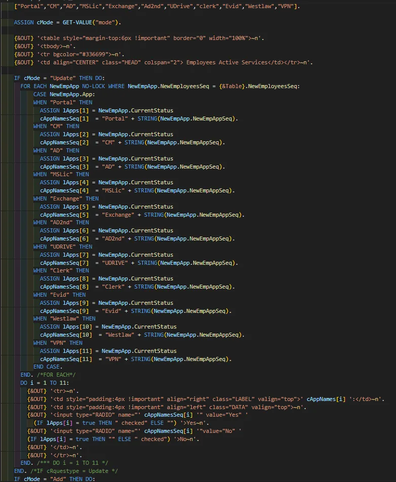

Need an Excel table on your site? No problem…
Unfortunately, I can not display nor talk about much of the code I wrote in my current Gov job, but here is a code snip of the code I wrote to turn the database tables into an Excel line table of our local program:
